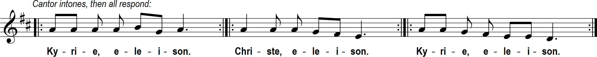

Thirty-third Sunday in Ordinary Time
Sat. 5:30, Sun. 9 am and 12 noon Masses
Thirty-third Sunday in Ordinary Time
Sat. 5:30, Sun. 9 am and 12 noon Masses
Prelude “Intermezzo” Max Reger (1873-1916); 12 noon: “Jeremiah 29 - Letter to the Exiles” (Vatican chant)


When one finds a worthy wife, her value is far beyond pearls. Her husband, entrusting his heart to her, has an unfailing prize. She brings him good, and not evil, all the days of her life. She obtains wool and flax and works with loving hands. She puts her hands to the distaff, and her fingers ply the spindle. She reaches out her hands to the poor, and extends her arms to the needy. Charm is deceptive and beauty fleeting; the woman who fears the LORD is to be praised. Give her a reward for her labors, and let her works praise her at the city gates.
Concerning times and seasons, brothers and sisters, you have no need for anything to be written to you. For you yourselves know very well that the day of the Lord will come like a thief at night. When people are saying, "Peace and security, " then sudden disaster comes upon them, like labor pains upon a pregnant woman, and they will not escape. But you, brothers and sisters, are not in darkness, for that day to overtake you like a thief. For all of you are children of the light and children of the day. We are not of the night or of darkness. Therefore, let us not sleep as the rest do, but let us stay alert and sober.
¤ Jesus told his disciples this parable: "A man going on a journey called in his servants and entrusted his possessions to them. To one he gave five talents; to another, two; to a third, one-- to each according to his ability. • Then he went away. Immediately the one who received five talents went and traded with them, and made another five. Likewise, the one who received two made another two. But the man who received one went off and dug a hole in the ground and buried his master's money. ¤ "After a long time the master of those servants came back and settled accounts with them. The one who had received five talents came forward bringing the additional five. He said, 'Master, you gave me five talents. See, I have made five more.' His master said to him, 'Well done, my good and faithful servant. Since you were faithful in small matters, I will give you great responsibilities. Come, share your master's joy.' • Then the one who had received two talents also came forward and said, 'Master, you gave me two talents. See, I have made two more.' His master said to him, 'Well done, my good and faithful servant. Since you were faithful in small matters, I will give you great responsibilities. Come, share your master's joy.' Then the one who had received the one talent came forward and said, 'Master, I knew you were a demanding person, harvesting where you did not plant and gathering where you did not scatter; so out of fear I went off and buried your talent in the ground. Here it is back.' His master said to him in reply, 'You wicked, lazy servant! So you knew that I harvest where I did not plant and gather where I did not scatter? Should you not then have put my money in the bank so that I could have got it back with interest on my return? Now then! Take the talent from him and give it to the one with ten. For to everyone who has, more will be given and he will grow rich; but from the one who has not, even what he has will be taken away. And throw this useless servant into the darkness outside, where there will be wailing and grinding of teeth.'"
Homily + Profession of Faith
I believe in one God, the Father almighty,
maker of heaven and earth,
of all things visible and invisible.
I believe in one Lord Jesus Christ,
the Only Begotten Son of God,
born of the Father before all ages.
God from God, Light from Light, true God from true God,
begotten, not made, consubstantial with the Father;
through him all things were made.
For us men and for our salvation he came down from heaven,
and by the Holy Spirit was incarnate of the Virgin Mary,
and became man.
For our sake he was crucified under Pontius Pilate,
he suffered death and was buried,
and rose again on the third day
in accordance with the Scriptures.
He ascended into heaven
and is seated at the right hand of the Father.
He will come again in glory to judge the living and the dead
and his kingdom will have no end.
I believe in the Holy Spirit, the Lord, the giver of life,
who proceeds from the Father and the Son,
who with the Father and the Son is adored and glorified,
who has spoken through the prophets.
I believe in one, holy, catholic and apostolic Church.
I confess one Baptism for the forgiveness of sins
and I look forward to the resurrection of the dead
and the life of the world to come. Amen.
Prayer of the Faithful + Offertory
+ Liturgy of the Eucharist +
May the Lord accept the sacrifice at your hands,
for the praise and glory of his name, for our good, and the good of all his holy Church.


+ Our Father +
Our Father, who art in heaven, hallowed be thy name; thy kingdom come, thy will be done on earth as it is in heaven.
Give us this day our daily bread, and forgive us our trespasses, as we forgive those who trespass against us;
and lead us not into temptation, but deliver us from evil.
Deliver us Lord from every evil, graciously grant peace in our day, that by the help of your mercy we may be always free from sin
and safe from all distress, as we await the blessed hope, and the coming of our Savior, Jesus Christ.
For the kingdom, the power and the glory are yours now and for ever.
+ Sharing of Peace +

Lord, I am not worthy that you should enter under my roof, but only say the word and my soul shall be healed.

“Grant us peace.”

Queen, mother of mercy: our life, sweetness, and hope, hail. To thee do we cry, poor banished children of Eve.
To you we sigh, mourning and weeping in this valley of tears.
Turn then, our advocate, those merciful eyes toward us. And Jesus, the blessed fruit of thy womb, after our exile, show us.
O clement, O loving, O sweet Virgin Mary
"St. Michael the Archangel, defend us in battle. Be our protection against the wickedness and snares of the devil.
May God rebuke him, we humbly pray; and do thou, O Prince of the heavenly hosts, by the power of God,
cast into hell Satan and all the evil spirits who prowl about the world seeking the ruin of souls. Amen."
.png)
Postlude “Heräa, nouse nukkumasta!” (“Wake up, get up from sleep!”) Kaj-Erik Gustafsson (1942 - )